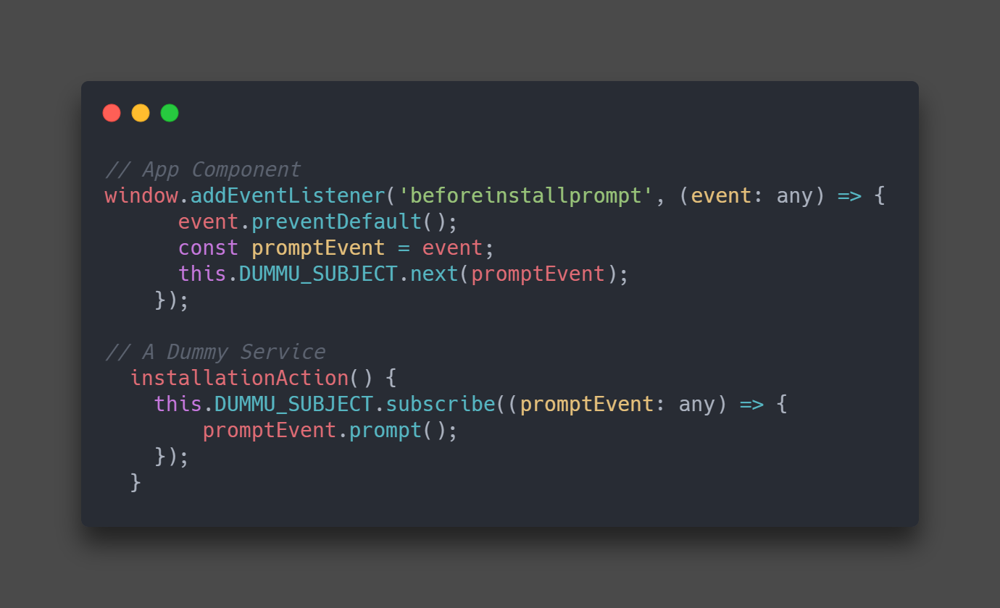

در اپ های نیتیو همیشه یکی از بزرگ ترین مشکلات زمان نسبتا طولانی دانلود و نصب برنامه است و به همین خاطر میانگین نصب برنامه برای کاربران گوشی های هوشمند در یک ماه تقریبا برابر 0 است و خب این که بدون هیچ اتلاف وقتی میتوانیم وب اپلیکیشن مان را نصب کنیم خود یک مزیت بزرگ است .
برای نصب باید به beforeinstallprompt در Service Worker گوش دهیم و این Event را در زمان لازم به کمک متد prompt اجرا کنیم .
با فشردن دکمه زیر میتوانید برنامه را در گوشی خود نصب کنید !
برای انجام این کار لازم داریم تا در زمانی که اتفاق (Event ) beforeinstallprompt را ذخیره کنیم و در زمان لازم متد propmt را از آن بخواهیم مانند عکس زیر :
البته باید به خاطر داشت که این event توسط مرورگر انجام میشود و زمان دقیقی برای آن نیست پس ممکن است کاربر دکمه نصب را انتخاب کند ولی مرورگر هنوز آن event را به ما نداده باشد .